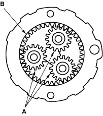
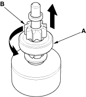
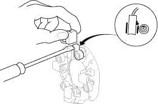
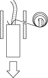

Planetary Gear Inspection
- Check the planetary gears (A) and ring gear (B). Replace them if they are worn or damaged.

Overrunning Clutch Inspection
- Slide the overrunning clutch along the shaft. Replace it, if it does not slide smoothly.
- Rotate the overrunning clutch (A) both ways. Does it lock in one direction and rotate smoothly in reverse? If it does not lock in either direction or it locks in both directions, replace it.

- If the starter drive gear (B) is worn or damaged, replace the overrunning clutch assembly; the gear is not available separately. Check the condition of the flywheel ring gear. Replace it if the starter drive gear teeth are damaged.
Starter Reassembly
- Pry back each brush spring with a screwdriver, then position the brush about halfway out of its holder, and release the spring to hold it there.
NOTE: To seat the new brushes, slip a strip of #500 or #600 sandpaper, with the grit side up, between the commutator and each brush, and smoothly rotate the armature. The contact surface of the brushes will be sanded to the same contour as the commutator.

- Install the armature in the housing, and install the brush holder. Next, pry back each brush spring again, and push the brush down until it seats against the commutator, then release the spring against the end of the brush.

- Install the starter end cover to retain the brush holder.